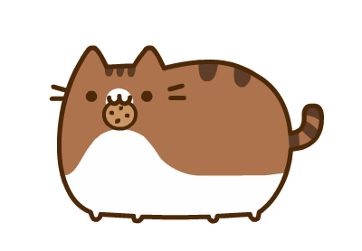

Сподіваюся, вам тут сподобається
Привіт!
Моє ім'я Касяненко Альона Олександрівна, і це моя домашня сторінка.
Основною метою цього сайту є знайомство зі мною, з моїми інтересами та мріями.Така автобіографія дає можливість не тільки покращити навички у створенні сайту, а й дізнатися трохи більше про саму себе та, як не дивно, зрозуміті себе.
-=- Оскільки я вчуся программуванню, то сайт створюю сама, постійно підвищуючи свої здібності. -=-
-=- Це, насправді, дуже цікаве заняття! Тут є дуже багато можливостей, а сам процес створення є дуже творчім. -=-
-=- Головне - вчитися чомусь новому та не складати руки. Ласкаво прошу на мою сторінку. ;) -=-